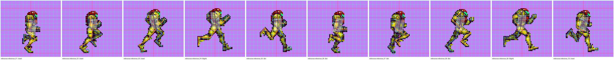
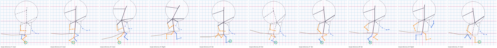

Five poses, sampled every other frame so the set covers near support, far support and one flight phase. Each pose has a reference image and a mouse image on the same grid: one cell is a twelfth of that character's own running height, with the origin on its hip column and ground row, so a joint in a given cell sits in the same place in both. Orange is near limbs, blue is far. Dashed lines with hollow dots are joints nobody could see in the artwork. The green ring is the foot on the ground. Exactly one mouse image carries the character artwork, marked below; the other four are grid and skeleton only.
The hand-placed trace over the unmodified sprites, all ten frames.

All ten transferred mouse skeletons, grounded on one row.
